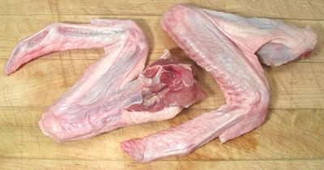

Duck Wings

Duck wings are plentiful in markets serving a Chinese or Southeast Asian
community, and fairly inexpensive. They are very much like chicken wings
but larger, the tip joint is much longer, and they are almost completely
devoid of fat. They are much used as appetizers in the same manner as
chicken wings but must be cooked considerably longer. Duck wings weigh
about 4.6 ounces each.
More on Working with Ducks.
Buying:
Find them in markets serving a Chinese or
Southeast Asian community. They are sold whole and as "drumettes"
(largest joint only). Whole wings are sold in trays weighing about
2 pounds at about US $1.49/pound.
Cooking:
Follow the recipe, or use as for chicken wings,
but cook at least twice as long. You can use them to make
Buffalo Duck Wings.
bd_dkwingz 090704 - www.clovegarden.com
©Andrew Grygus - agryg@clovegarden.com - Photos on this
page not otherwise credited are © cg1 -
Linking to and non-commercial use of this page permitted